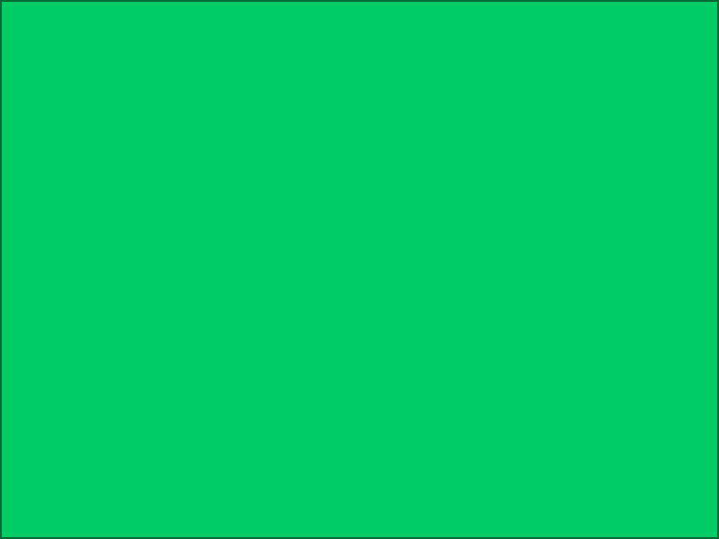

Select View, Load Images Intelligently before opening this page. Inline images of at most 480,000 intrinsic pixels load automatically. Larger images remain compact until activated. Background images always load.
Green PNG, 800 by 600 = 480,000 pixels: loads automatically.

Orange JPEG, 160 by 120: loads automatically.
Duplicate accepted JPEGs retain independent authored geometry:
natural
width only
height only
width and height
Magenta GIF, 801 by 600 = 480,600 pixels: remains compact. Activating its
label loads it at the authored size.
The pale yellow page background is also 801 by 600, but backgrounds bypass the inline image limit.
| This pale cyan table background is also 801 by 600 and loads automatically. |
No ALT shows only the image identity:
Empty ALT also shows only the image identity:
A linked compact image has a load action followed by ALT and a more link:
A linked compact image without ALT puts the more link on the second line:
Unsupported SVG with ALT:
Unsupported SVG without ALT:
Linked unsupported SVG with ALT:

Linked unsupported SVG without ALT:

ALT text wraps below the filename and format row, with the more link on
the final line if it fits:

A long path is stripped and the filename is ellipsized without losing its
extension:

A long filename without an extension is ellipsized at both ends:
An unlinked compact ALT line does not activate:

Only the more text, not the linked compact ALT text, follows the article
link:

A missing image remains retryable: